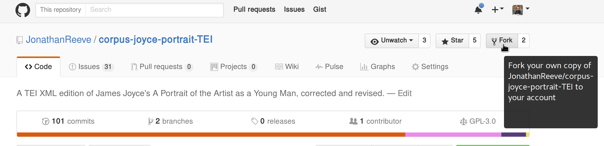
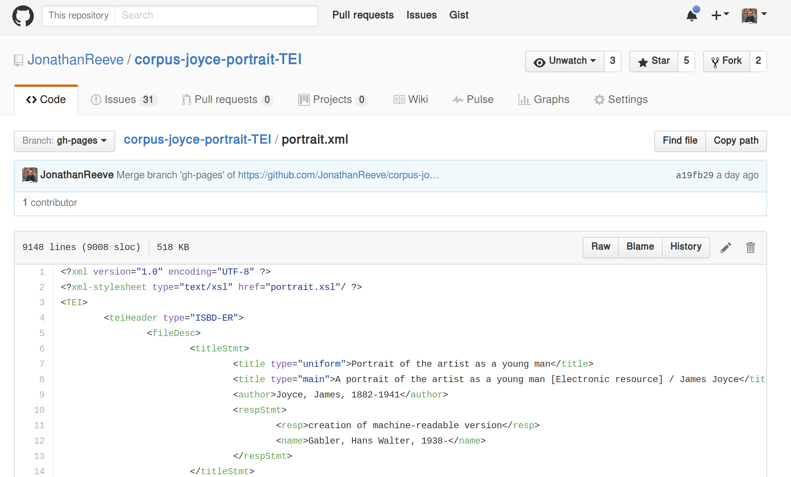
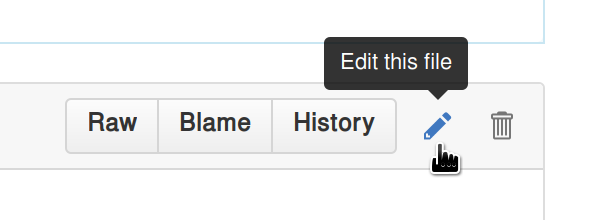
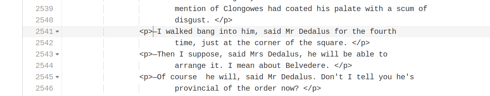
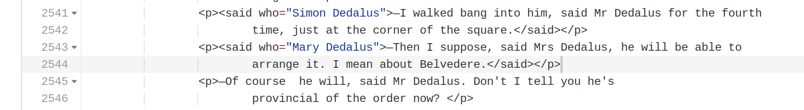
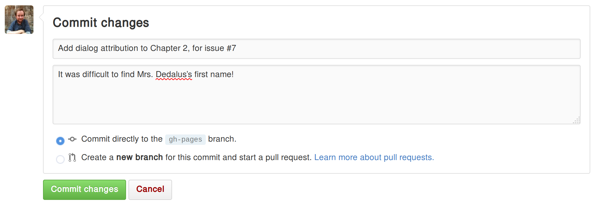
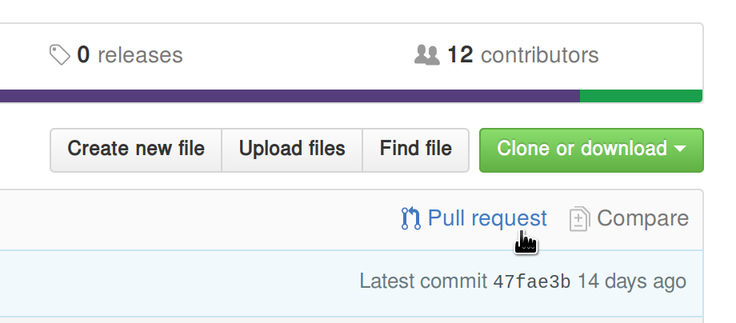
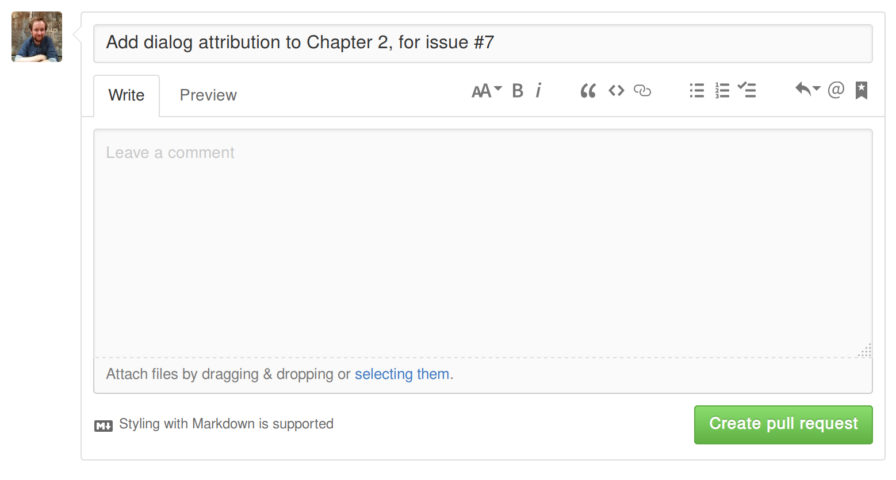

Contributing
Anyone can contribute to this project, and help improve the texts in it. No prior experience with programming is necessary. If you are a literary scholar with little experience with XML, follow the Beginner’s Guide below. Or, if you’re comfortable with Git and XML, follow the Advanced Guide.
There are lots of reasons you’d want to contribute to this project.
Contribute to Open Editions by following the instructions here.
Beginner’s Guide
1. Choose a text.
Choose a text you’re interested in. A list of available texts may be found by searching for “corpus” in the Open Editions repository on GitHub. If you don’t see a text there, but you’d like to create one, open an issue on the open-editions.org repository, proposing a new text, and the features you’d like to add to it.
2. Choose or create a feature that interests you.
The GitHub repository for each text has a tab labeled “issues” that operates as a kind of todo list and discussion group for the community surrounding each text. Click there to see the issues for your chosen text, or append /issues to the url of the text’s repository. For instance, here is the issues page for the Open Edition of James Joyce’s A Portrait of the Artist as a Young Man.
If you’d like to work on a feature that doesn’t yet have an issue, you can create one. However, we’d suggest that you first look around at other texts to see if a similar issue exists there. If so, you might be able to borrow that approach for your feature. The texts page also lists a number of features planned for each text, along with their respective issues.
The easiest issues are the ones with the markup flag, such as these from Portrait. You can also try answering one of the open questions in the issue tracker, or join the discussion there in any way you see fit.
Once you choose something to work on, make sure to leave a note in that issue so that others won’t be working on the same thing. For example, let’s say you want to work on marking up dialog for part of Chapter 2 of Portrait. First, see if an issue exists for that by looking through the list of issues. In this example, it does–it’s issue #7: add dialog attribution with format <said who=””>. Next, look through the comments for that issue to make sure no one else is already working on that section. Then, log in to GitHub, and leave a comment at the bottom of that issue, saying something like “I’ll start working on dialog attribution for part of Chapter 2.”
3. Sign up for a GitHub account.
Get a GitHub account, if you don’t already have one. GitHub accounts are free, and you can sign up for one at github.com. Try to make sure your real name and main email address are shown somewhere in your user profile, so that your work can be properly credited to you.
4. Fork the project.
“Forking” is just coding jargon for making a copy of a project, so that you can work on it. To fork a project, go to the project homepage, e.g., the homepage for the Portrait edition, and click the “Fork” button in the upper right corner:

This will create a copy of the project in your user account where you will make all of your changes. Now your copy lives at github.com/your-username-here/corpus-joyce-portrait-TEI, where your-username-here is your GitHub username. Navigate to your fork’s homepage. You can also find it by going to your profile page and clicking the “repositories” tab.
Step 4: Make your edits.
Portrait.xml is the name of the main TEI XML file for the novel. To browse through it, you can find it here on the project site, but to edit it, you’ll have to find this file on your fork. To do that, go to your fork, click the “Code” tab, and click “portrait.xml” in the file listing. You can also navigate to the URL https://github.com/your-username-here/corpus-joyce-portrait-TEI/blob/gh-pages/portrait.xml, replacing your-username-here with your GitHub username. Now you should see something like this:

but instead of my username, JonathanReeve, you should see your own. To edit the file, click the pencil icon in the upper right:

Now you should be able to make changes to your fork. Find the area in the novel that you want to change (you can click in the text area and use Control+F to search the novel for your section), and then make the changes. For example, here is what my dialog section looked like before:

And here is what it looks like after I make my edit:

If you’re not already used to XML, there are a couple things to note here.
-
The
<said>tags are inside the<p>tags, since the dialog is within the paragraph, not the other way around. -
For the attribution (
who=), I’m writing the full name of the character, not just how they’re referred to in this line of text (i.e. “Simon Dedalus” instead of “Mr. Dedalus”).
If you want a quick introduction to XML, check out the w3schools introduction, a 10-minute read at most. If you want a more TEI-specific guide, the TEI Lite Introduction is good.
Step 5: Commit your changes.
Now that you’ve made all your changes for this round (you might want to make another, separate set of changes later), you can commit your changes, and describe what it is that you did. Please reference the issue that you’re working on. For this dialog attribution example, I’ve described my change as Add dialog attribution to Chapter 2, for issue #7, and added an additional description that It was difficult to find Mrs. Dedalus’s first name!.

Repeat steps 4-5 as necessary, until you’re done making your changes. You don’t need to commit after each line you’ve edited, but don’t wait weeks, either. The more you commit, the more modular your contribution will be, and the easier it will be to handle.
Step 6: Submit a pull request with your changes.
Now that you’ve made your changes, you’ll want to submit them to the main edition for approval. A “pull request” is a request to the main project to integrate the changes you made on your fork. To submit a pull request, go to your fork’s homepage, i.e. github.com/your-username-here/corpus-joyce-portrait-tei and click the button labeled “Pull request”:

This should bring up a page where you can describe your pull request:

Write a description of all the edits you committed. In this example, I wrote roughly the same thing as my commit message, Add dialog attribution to Chapter 2, for issue #7, but if you have more than one commit, you’ll want to describe the changes represented by all of your commits.
Before clicking “Create pull request,” scroll down and review your changes once more. If everything looks good, create the pull request.
What Tags To Use
-
Attribute dialog by surrounding it with
<said who="">and</said>. Fill in the “who” portion with the full name of the speaker. -
Mark up poetry (and verse more generally) by surrounding stanzas with
<lg>(for “line group”) and lines with<l>(for “line”). End each stanza with</lg>and each line with</l> -
Mark up personal names with
<persName>and place names with<placeName>. -
Mark up songs with
<seg type="song">and prayers with<seg type="prayer"> -
Mark up foreign languages with, e.g.
<seg xml:lang="fra">, using the standard 3-letter language codes (ISO-639)
If the feature you’d like to mark up is not in the above list, first see if there’s an issue in the issue tracker for it. If there’s no issue, or if there’s no tag convention in the issue’s comments, consult the TEI P5 Guidelines. When in doubt, feel free to ask a question in our Gitter chatroom.
Advanced Guide
- Pick a text that interests you.
- Clone the repo of that text from GitHub.
- Either find an issue that you want to work on, or make a new one.
- Leave a note in that issue, introducing yourself and explaining what you’re going to do.
- Clone the repo to your machine.
- Make some changes.
- Ensure that the XML validates (the CI will do this, too).
- Submit a pull request!